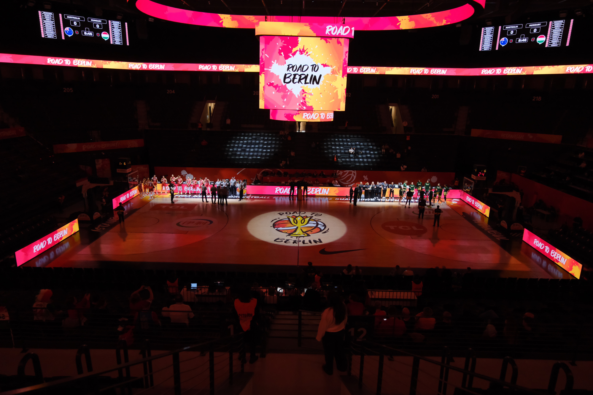

A Copa do Mundo de Basquete Feminino 2026 começa nesta sexta-feira, 4 de setembro, em Berlim, na Alemanha, reunindo algumas das maiores estrelas do basquete mundial e apresentando uma novidade importante: pela primeira vez desde a expansão aprovada pela FIBA, o torneio principal será disputado por 16 seleções.
A competição terá 36 partidas ao longo de dez dias e terminará em 13 de setembro, quando será conhecida a campeã mundial. Todos os jogos serão realizados em Berlim, divididos entre a Berlin Arena e a Max-Schmeling-Halle. A edição de 2026 também representa um novo capítulo de uma competição iniciada em 1953 e que ajudou a construir algumas das maiores histórias do basquete feminino internacional.
História da competição
A Copa do Mundo de Basquete Feminino é disputada desde 1953, quando a primeira edição foi realizada em Santiago, no Chile. Os Estados Unidos conquistaram o título inaugural ao superar as anfitriãs chilenas na fase decisiva e começaram ali uma trajetória de domínio na competição. Atualmente, o Mundial é realizado a cada quatro anos, embora nas primeiras décadas o calendário tenha apresentado intervalos irregulares; a partir de 1986, a FIBA passou a organizar o torneio em anos pares, no meio do ciclo olímpico.
Maiores campeões:
- 1. Estados Unidos — 11 títulos
- 2. União Soviética — 6 títulos
- 3. Brasil e Austrália — 1 título cada
O Brasil foi campeão em 1994, com a histórica geração de Hortência, Magic Paula e Janeth. A Austrália conquistou seu título em 2006.
Até a edição de 2022, apenas quatro seleções haviam conquistado a Copa do Mundo de Basquete Feminino: Estados Unidos, União Soviética, Brasil e Austrália.
Para o público brasileiro, há ainda um atrativo importante: a Copa do Mundo está dentro do acordo de direitos de transmissão firmado entre a FIBA e a CazéTV.
Isso não significa, porém, que todos os 36 jogos estejam confirmados na grade da emissora. A programação específica deve ser acompanhada rodada a rodada.
As 16 seleções classificadas para o Mundial de 2026
O sorteio distribuiu as seleções em quatro grupos com quatro participantes cada:
Grupo A
- Japão
- Espanha
- Alemanha
- Mali
Grupo B
- Hungria
- Coreia do Sul
- Nigéria
- França
Grupo C
- Bélgica
- Austrália
- Porto Rico
- Turquia
Grupo D
- Estados Unidos
- Tchéquia
- Itália
- China
O Grupo D chama atenção imediatamente pela presença dos Estados Unidos e da China, justamente as duas seleções que decidiram a Copa do Mundo de 2022. Já o Grupo C reúne Austrália e Bélgica, duas das principais forças da competição, além de Turquia e Porto Rico.
Como funciona o novo formato
Esse é um dos pontos mais importantes para entender a competição.
Na primeira fase, as quatro equipes de cada grupo se enfrentam entre si. A líder de cada chave ganha uma vantagem significativa: avança diretamente às quartas de final.
As seleções que terminarem em segundo e terceiro lugares não estarão eliminadas, mas precisarão disputar uma rodada adicional de classificação para as quartas. Os confrontos serão cruzados entre os Grupos A e B e entre os Grupos C e D.
A quarta colocada de cada grupo será eliminada.
Depois dessa rodada intermediária, oito seleções estarão nas quartas de final. A partir daí, a competição segue em sistema eliminatório até a decisão do título.
O calendário das fases ficou definido da seguinte maneira:
- Fase de grupos: 4 a 7 de setembro
- Classificação para as quartas de final: 8 e 9 de setembro
- Quartas de final: 10 de setembro
- Semifinais: 12 de setembro
- Disputa do terceiro lugar: 13 de setembro
- Final: 13 de setembro
A estrutura valoriza especialmente quem termina na liderança do grupo, já que essas quatro seleções evitam uma partida eliminatória e entram diretamente entre as oito melhores.
Estados Unidos chegam novamente como favoritas
É impossível falar da Copa do Mundo feminina sem começar pelos EUA. A seleção norte-americana conquistou o Mundial de 2022 ao vencer a China por 83 a 61 na final realizada em Sydney e chega à Alemanha tentando levantar sua quinta taça consecutiva.
A última vez em que a equipe não foi campeã foi em 2006, quando a Austrália conquistou o torneio.
Mesmo com mudanças no elenco em relação à última Copa do Mundo, a seleção norte-americana desembarca em Berlim com nomes de enorme projeção. Breanna Stewart está entre as referências mais experientes, enquanto Caitlin Clark, Paige Bueckers e Angel Reese fazem parte da nova geração que chega ao Mundial.
A própria FIBA colocou os Estados Unidos na primeira posição de seu último Smart Power Rankings antes do início do torneio. O ranking editorial da entidade, que é subjetivo e não representa a classificação mundial oficial.
França, Espanha, Bélgica e Austrália entram na disputa
A superioridade histórica dos Estados Unidos não significa que o caminho até o título esteja livre.
A França chega com nomes como Gabby Williams, Marine Johannès e Dominique Malonga e aparece como uma das principais candidatas a desafiar as norte-americanas.
A Espanha também entra forte depois de uma preparação elogiada pela FIBA e tem tradição suficiente para ser considerada uma equipe de alto risco no mata-mata.
A Bélgica conta com uma geração consolidada internacionalmente, enquanto a Austrália permanece entre as grandes potências do basquete feminino. No ranking mundial apresentado nas páginas oficiais da competição antes do Mundial, a Austrália aparece como terceira colocada e a Bélgica como quinta.
Jogo de abertura com clima de revanche
Um dos jogos mais aguardados da primeira rodada acontecerá já em 4 de setembro: Estados Unidos x China, pelo Grupo D.
O encontro é especial porque reedita a decisão da Copa do Mundo de 2022. Naquela oportunidade, as norte-americanas venceram por 83 a 61 e conquistaram o título.
O histórico registrado pela FIBA mostra amplo domínio dos Estados Unidos no confronto, o que aumenta ainda mais o desafio chinês para a estreia em Berlim.
Brasil não disputa a Copa do Mundo de 2026
Apesar de sua enorme tradição no basquete feminino, o Brasil não está entre as 16 seleções classificadas para Berlim.
A Seleção Brasileira disputou em março o torneio classificatório realizado em Wuhan, na China, mas terminou fora das vagas para o Mundial. Entre os resultados que pesaram na campanha estiveram a derrota por 84 a 65 para a Tchéquia e o revés por 83 a 71 diante da China na última rodada.
A chave terminou com Bélgica em primeiro e China em segundo. Mali, Tchéquia, Brasil e Sudão do Sul completaram a classificação do grupo, com as condições específicas de qualificação determinadas pelo sistema do torneio e pelas seleções que já possuíam vagas asseguradas.
A ausência brasileira ganha ainda mais peso quando se observa a história da competição.
O Brasil pertence ao grupo extremamente restrito de países que já levantaram a taça. A Seleção Brasileira conquistou o Mundial de 1994, em uma geração histórica liderada por Hortência, Magic Paula e Janeth Arcain. A conquista permanece como um dos pontos mais altos de toda a história do basquete brasileiro.
A edição de 2026 também chega em um ano de forte significado emocional para a modalidade no país. Em abril, o basquete brasileiro e mundial perdeu Oscar Schmidt, o Mão Santa, e uma das maiores lendas da história do esporte, aos 68 anos. Embora nunca tenha sido campeão mundial, Oscar teve uma trajetória marcante na Copa do Mundo masculina: disputou quatro edições e conquistou a medalha de bronze com o Brasil em 1978, em Manila, nas Filipinas. Naquele Mundial, marcou 159 pontos em nove partidas.
Oscar ainda se transformaria em um dos maiores símbolos da competição. Ao longo de suas participações em Mundiais, acumulou 906 pontos em 34 jogos, marca que permanece como recorde de pontuação na história da Copa do Mundo masculina da FIBA. Sua morte em 2026 representa, portanto, uma perda que ultrapassa o basquete brasileiro e alcança a própria história do torneio mundial.
Essa dimensão histórica faz com que a Copa do Mundo feminina vá muito além da edição de 2026. O torneio é a principal competição de seleções organizada pela FIBA no basquete feminino e funciona como uma referência permanente para comparar gerações, potências e a evolução mundial da modalidade.
Competição entra em nova era
A edição de Berlim marca uma mudança estrutural importante. Em 2022, o Mundial disputado na Austrália contou com 12 seleções. Em 2026, o número sobe para 16, aumentando a presença internacional e modificando também o caminho até o título.
O novo sistema transforma a liderança de cada grupo em objetivo estratégico. Terminar em primeiro significa avançar diretamente às quartas; ficar em segundo ou terceiro obriga a seleção a sobreviver a mais um jogo eliminatório.
Ao mesmo tempo, o Mundial coloca frente a frente uma geração consolidada e uma nova leva de estrelas. Breanna Stewart, Emma Meesseman e outras referências internacionais dividem o palco com atletas como Caitlin Clark, Paige Bueckers, Angel Reese e Dominique Malonga.
Entre 4 e 13 de setembro, Berlim será o centro do basquete feminino mundial. Os Estados Unidos entram como referência histórica e favoritos, mas França, Espanha, Bélgica, Austrália e outras seleções chegam com argumentos para transformar a nova Copa do Mundo em uma disputa mais aberta.
Para quem acompanha a modalidade no Brasil, mesmo sem a Seleção Brasileira em quadra, o Mundial de 2026 oferece dez dias de basquete internacional de alto nível — e uma oportunidade de acompanhar de perto o início de uma nova fase da principal competição feminina de seleções da FIBA.